43 figures. Each has a vector PDF and a caption file beside the PNG.
Overview
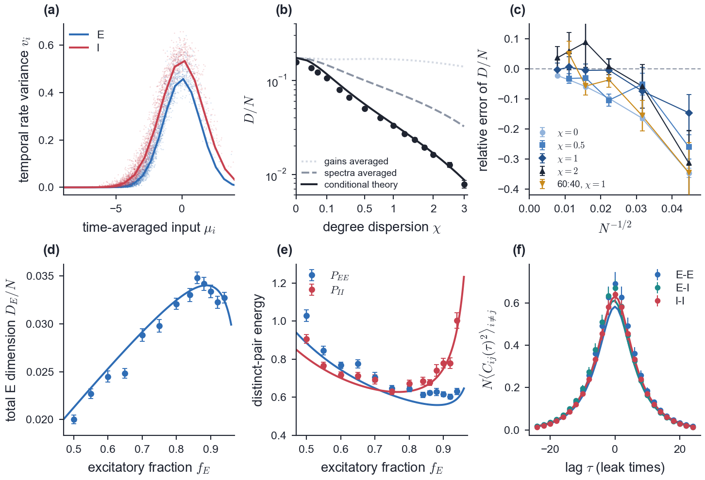
overview.pdf Conditional theory against 1,694 simulated networks, one page. (a) Each neuron's rate variance against its mean input at Bernoulli dispersion (dots; eight networks) with the conditional law (lines). (b) Dimension per neuron against degree dispersion, N = 2,000, with the conditional prediction and the two premature-averaging approximations. (c) Relative error of D/N against inverse square root of network size at five settings, N = 500 to 16,000 (medians with bootstrap standard errors). (d) Total E dimension per network neuron against excitatory fraction. (e) Squared covariance per distinct E-E and I-I pair against excitatory fraction. (f) Equal-lag pair moment against lag for E-E, E-I and I-I pairs. Lines are parameter-only predictions; markers are across-network means with one standard error.
Degree dispersion
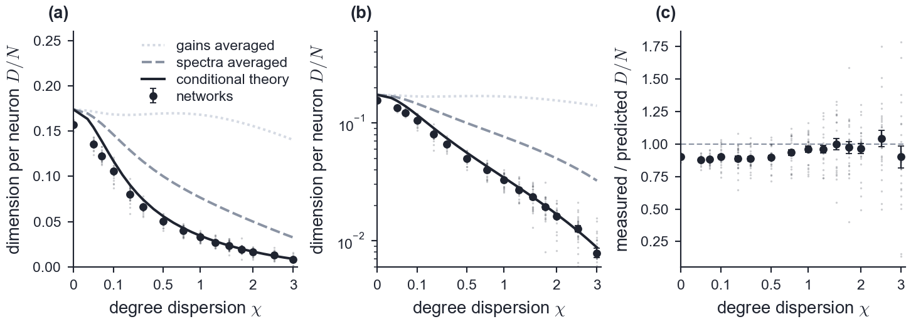
degree_dimension.pdf Degree dispersion lowers activity dimension along the conditional prediction. (a) Joint dimension per neuron against in-degree dispersion; the solid line is the parameter-only conditional theory, the dashed and dotted lines average the conditional spectra or the gains before taking second moments. (b) The same on a logarithmic axis. (c) Ratio of each network's dimension to the prediction. Dots are networks, markers are means with one across-network standard error. N = 2,000, 80:20 E:I, 24 networks per dispersion, 8,000 recorded leak times.
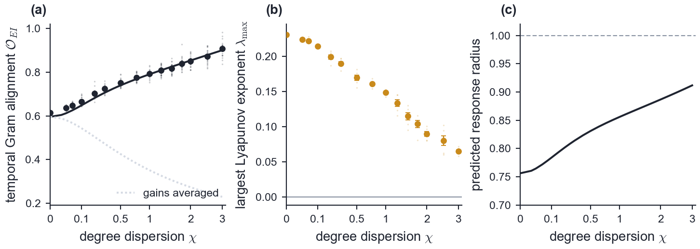
degree_dynamics.pdf Alignment and chaos along the degree sweep. (a) Normalized E-I covariance energy (linear CKA of the two temporal Gram matrices) with its prediction. (b) Largest finite-time Lyapunov exponent of the midpoint map, six networks per dispersion, 2,000 leak times after burn-in. (c) Predicted spectral radius of the population response matrix; the averaging proposition assumes it is below one. N = 2,000, 80:20 E:I, 24 networks per dispersion, 8,000 recorded leak times.
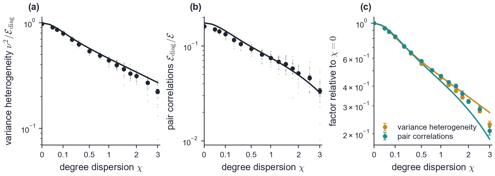
degree_factors.pdf Two routes to low dimension. D/N factors into a variance-heterogeneity term and a pair-correlation term (manuscript Eq. degreefactors). (a,b) Each factor against dispersion. (c) Both relative to their value at fixed in-degree; measured factors are normalized by the measured mean at zero dispersion. N = 2,000, 80:20 E:I, 24 networks per dispersion, 8,000 recorded leak times.
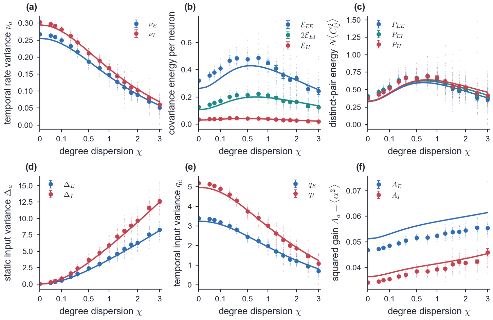
degree_ingredients.pdf The ingredients of the dimension along the degree sweep. (a) Mean temporal rate variance of each population. (b) Covariance energies per network neuron; the E-I block is counted twice. (c) N times the mean squared covariance over distinct pairs. (d) Across-neuron variance of mean input, estimated across disjoint 500-time windows. (e) Temporal input variance. (f) Mean squared time-averaged gain. Lines are parameter-only predictions. N = 2,000, 80:20 E:I, 24 networks per dispersion, 8,000 recorded leak times.
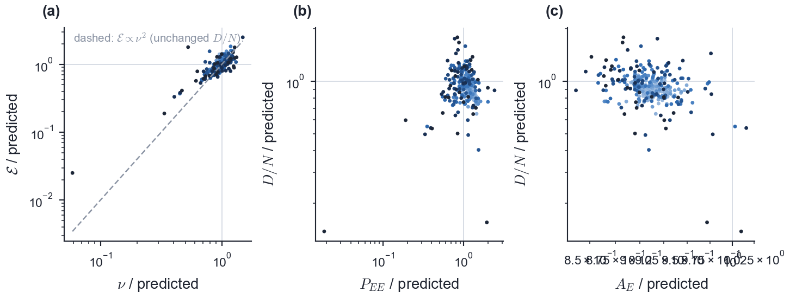
degree_network_scatter.pdf Network-by-network residuals along the degree sweep (360 networks; light to dark is dispersion 0 to 3). (a) Covariance energy against rate variance, each divided by its prediction; networks move along the dashed curve when amplitude changes without changing dimension. (b,c) Dimension residual against the residual of the E-E pair energy and of the E squared gain. N = 2,000.
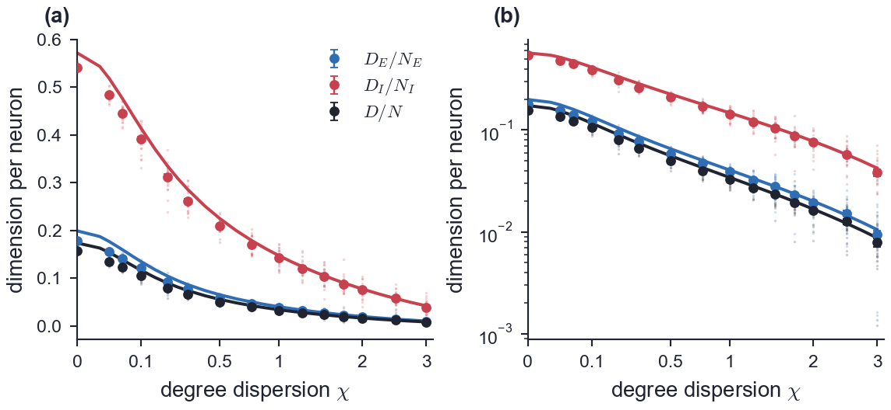
degree_population_dimensions.pdf E-only, I-only and joint dimension per corresponding neuron along the degree sweep, on linear (a) and logarithmic (b) axes. N = 2,000, 80:20 E:I, 24 networks per dispersion, 8,000 recorded leak times.
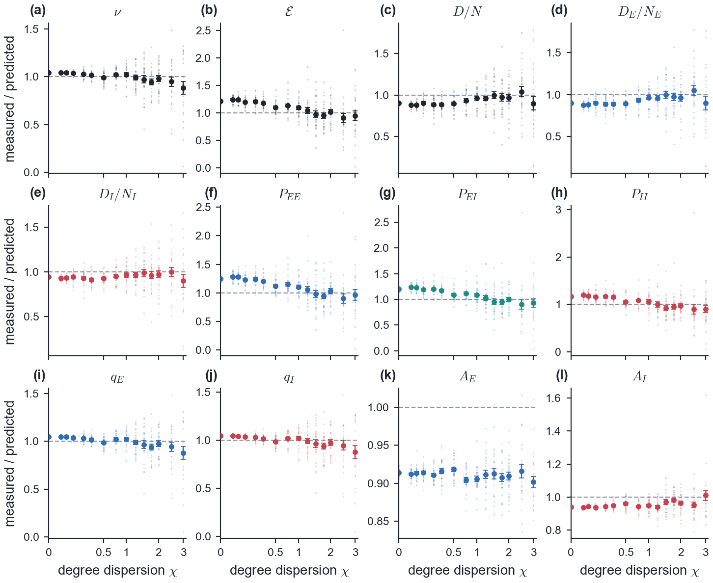
degree_ratios.pdf Measured-to-predicted ratios along the degree sweep. Each panel divides one network statistic by its parameter-only prediction at the same dispersion; the dashed line marks agreement. N = 2,000, 80:20 E:I, 24 networks per dispersion, 8,000 recorded leak times.
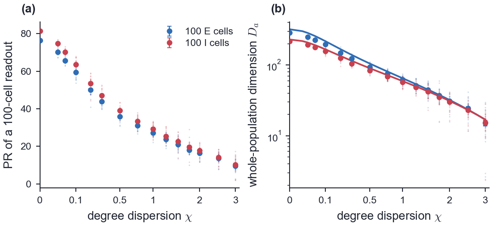
degree_readout.pdf Fixed-size readouts along the degree sweep. (a) Participation ratio of 100 uniformly sampled E or I cells (mean of eight readouts per network). (b) Dimension of each whole population, 1,600 E and 400 I cells, with predictions. N = 2,000, 80:20 E:I, 24 networks per dispersion, 8,000 recorded leak times.
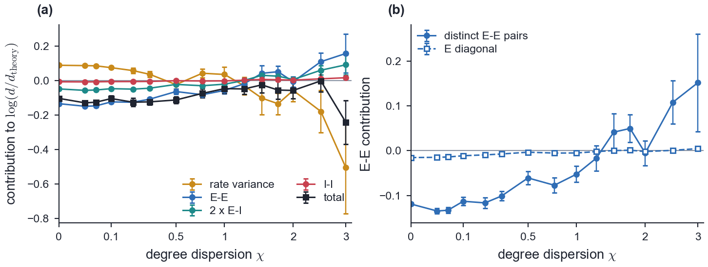
degree_residual_partition.pdf Which covariance terms carry the dimension error. Each network's log dimension error is partitioned exactly into a rate-variance term and the three block-energy terms (experiments/degree_residual). (a) Mean contribution of each term; squares give the total. (b) The E-E term split into distinct pairs and the same-neuron diagonal. Bars are one across-network standard error. N = 2,000, 80:20 E:I, 24 networks per dispersion, 8,000 recorded leak times.
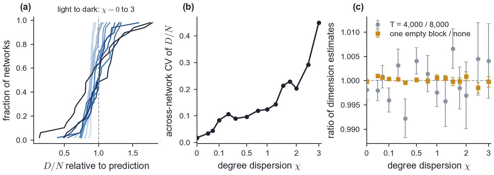
degree_spread_and_sensitivity.pdf Network-to-network spread and recording sensitivity along the degree sweep. (a) Empirical distribution of D/N over 24 networks at each dispersion, divided by the prediction. (b) Coefficient of variation across networks. (c) Ratio of the dimension estimated from the first 4,000 leak times, or with one empty window between estimator windows, to the primary estimate. N = 2,000, 80:20 E:I, 24 networks per dispersion, 8,000 recorded leak times.
Network size
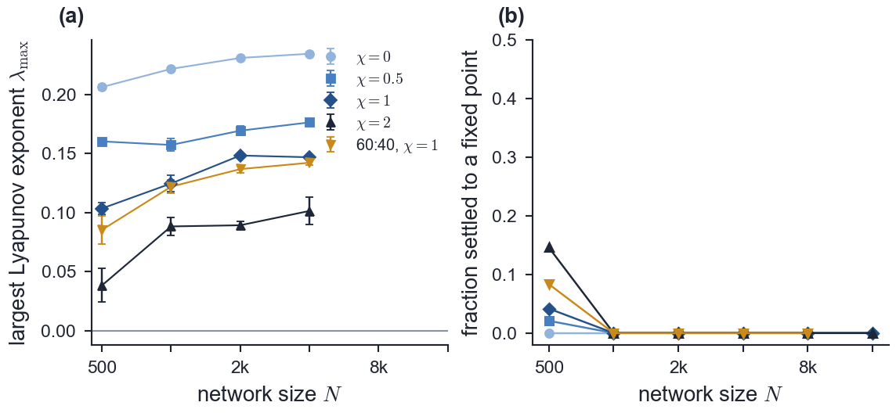
size_chaos.pdf (a) Largest finite-time Lyapunov exponent against network size (up to six networks per point; none at N = 8,000 or above). (b) Fraction of networks that ended the recording at a stable fixed point (final drift below 1e-10); these have no stationary PR and are excluded from every other panel. Networks per size: 48, 32, 24 (48 at 60:40), 12 and 6 for N = 500, 1,000, 2,000, 4,000 and 8,000, and 4 at N = 16,000 for dispersions 0, 1 and 2. Dots are networks; markers are across-network medians with a bootstrap standard error over fluctuating networks (medians, because at N = 500 a few weakly fluctuating networks have ill-conditioned ratios).
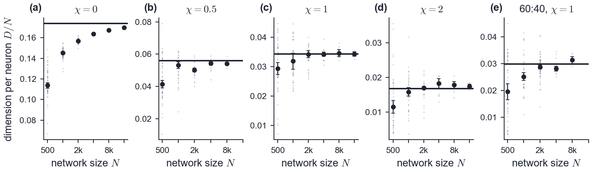
size_dimension.pdf Dimension per neuron against network size at five settings. The horizontal line is the large-N conditional prediction. Networks per size: 48, 32, 24 (48 at 60:40), 12 and 6 for N = 500, 1,000, 2,000, 4,000 and 8,000, and 4 at N = 16,000 for dispersions 0, 1 and 2. Dots are networks; markers are across-network medians with a bootstrap standard error over fluctuating networks (medians, because at N = 500 a few weakly fluctuating networks have ill-conditioned ratios).
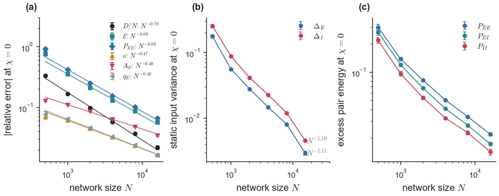
size_fixed_degree_exponents.pdf How the fixed in-degree residuals vanish with network size. (a) Absolute relative error of the across-network mean against the large-N prediction, with weighted power-law fits (exponents in the legend). (b) Across-neuron variance of mean inputs, which the leading theory sets to zero at fixed in-degree. (c) Measured minus predicted distinct-pair energy. Bars are one across-network standard error; fits are descriptive, over the sizes shown.
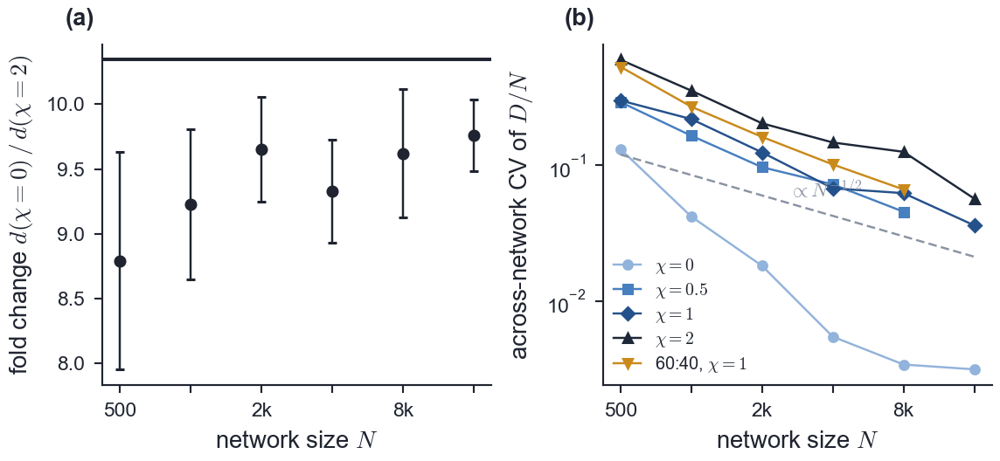
size_fold_change_and_spread.pdf (a) Ratio of mean dimension at fixed in-degree to that at dispersion 2, against network size; the line is the predicted 10.34-fold change and bars are delta-method standard errors. (b) Coefficient of variation of D/N across networks; the dashed line has slope -1/2. Networks per size: 48, 32, 24 (48 at 60:40), 12 and 6 for N = 500, 1,000, 2,000, 4,000 and 8,000, and 4 at N = 16,000 for dispersions 0, 1 and 2. Dots are networks; markers are across-network medians with a bootstrap standard error over fluctuating networks (medians, because at N = 500 a few weakly fluctuating networks have ill-conditioned ratios).
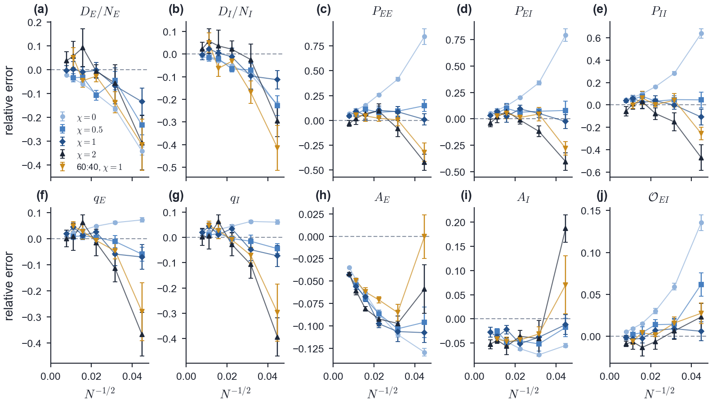
size_ingredients.pdf Finite-size residuals of population dimensions, distinct-pair energies, local input and gain statistics and E-I alignment, as relative errors of the across-network median against the prediction. Networks per size: 48, 32, 24 (48 at 60:40), 12 and 6 for N = 500, 1,000, 2,000, 4,000 and 8,000, and 4 at N = 16,000 for dispersions 0, 1 and 2. Dots are networks; markers are across-network medians with a bootstrap standard error over fluctuating networks (medians, because at N = 500 a few weakly fluctuating networks have ill-conditioned ratios).
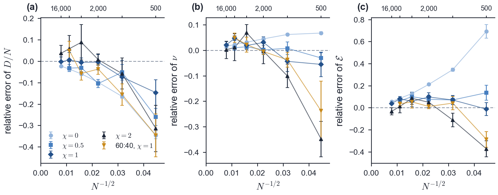
size_scaling.pdf Finite-size residuals of the dimension and its two ingredients. Relative error of the across-network median against the large-N prediction, plotted against the inverse square root of network size (top axis: N). A leading finite-size correction would appear as a straight line through the origin. Bars are one across-network standard error. Networks per size: 48, 32, 24 (48 at 60:40), 12 and 6 for N = 500, 1,000, 2,000, 4,000 and 8,000, and 4 at N = 16,000 for dispersions 0, 1 and 2. Dots are networks; markers are across-network medians with a bootstrap standard error over fluctuating networks (medians, because at N = 500 a few weakly fluctuating networks have ill-conditioned ratios).
Composition and readouts
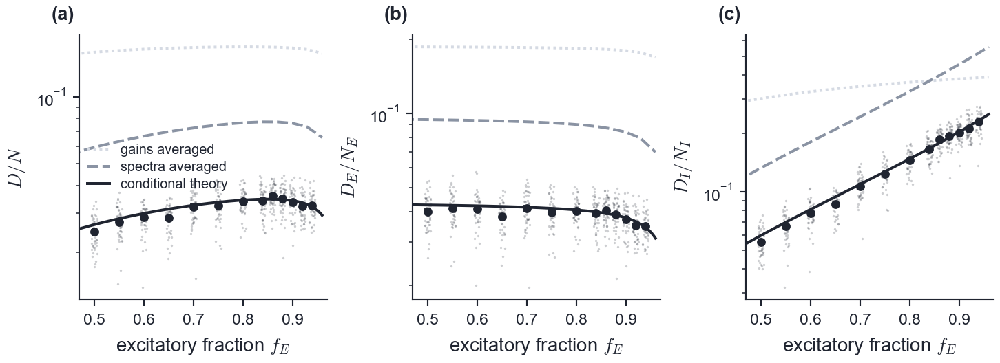
composition_averaging_controls.pdf Premature averaging fails along the whole composition path. Joint (a), E-only (b) and I-only (c) dimension per neuron against excitatory fraction, with the conditional prediction and the two approximations that average spectra or gains before taking second moments. N = 2,000, 48 seed-matched networks per fraction.
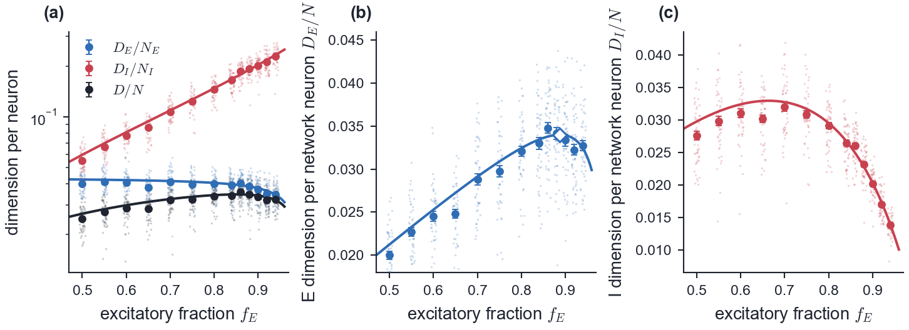
composition_dimensions.pdf Per-neuron and total population dimensions against excitatory fraction. (a) E-only, I-only and joint dimension per corresponding neuron. (b) Total E dimension divided by network size; the hollow diamond marks the predicted maximum. (c) Total I dimension divided by network size. N = 2,000, Bernoulli edges, 48 seed-matched networks per fraction, 8,000 recorded leak times.
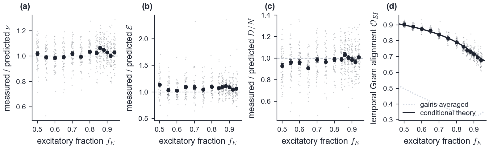
composition_moments.pdf Composition changes temporal alignment while the predicted moments stay accurate. (a-c) Mean rate variance, covariance energy and joint dimension divided by their predictions. (d) E-I temporal Gram alignment with its prediction; the dotted line averages the gains first. N = 2,000, Bernoulli edges, 48 seed-matched networks per fraction, 8,000 recorded leak times.
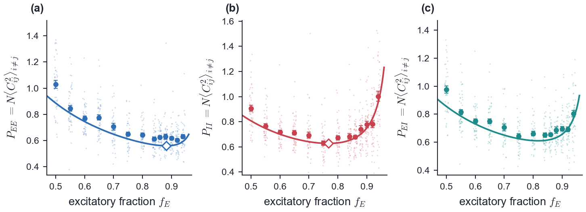
composition_pair_energy.pdf Squared covariance per distinct pair against excitatory fraction, for E-E (a), I-I (b) and E-I (c) pairs. Hollow diamonds mark the predicted minima of the within-population pair energies. N = 2,000, Bernoulli edges, 48 seed-matched networks per fraction, 8,000 recorded leak times.
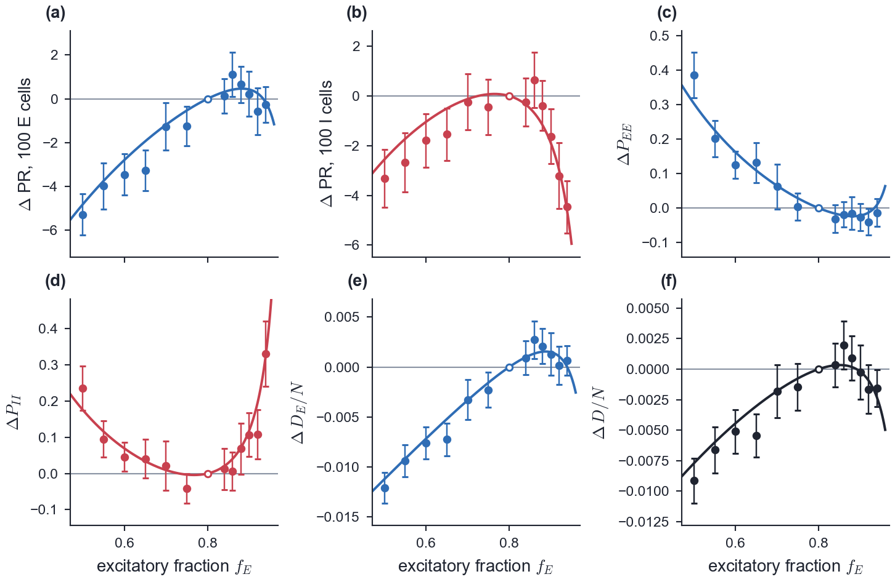
composition_paired_changes.pdf Seed-paired changes relative to 80% excitatory cells. Each marker is the mean over matched seeds of the difference between a network at the plotted fraction and the same-seed network at 0.80; bars are two-sided 95% Student-t intervals. Lines are the predicted differences. (a,b) 100-cell E and I readout PR. (c,d) Distinct-pair energies. (e) Total E dimension per network neuron. (f) Joint dimension per neuron. N = 2,000, Bernoulli edges, 48 seed-matched networks per fraction, 8,000 recorded leak times.
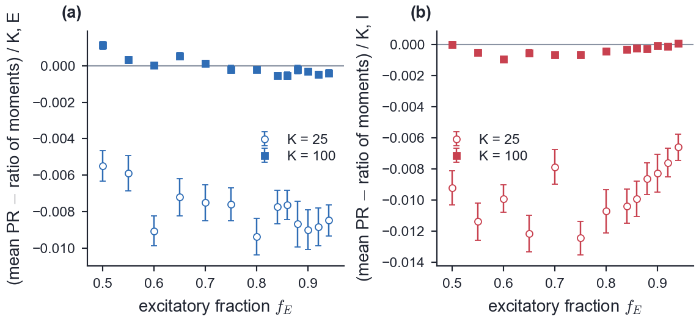
composition_ratio_approximation.pdf Size of the ratio-of-moments approximation. For each network, the mean of eight readout PRs minus the ratio of the subset-averaged squared trace to the subset-averaged energy, per readout cell. N = 2,000, Bernoulli edges, 48 seed-matched networks per fraction, 8,000 recorded leak times.
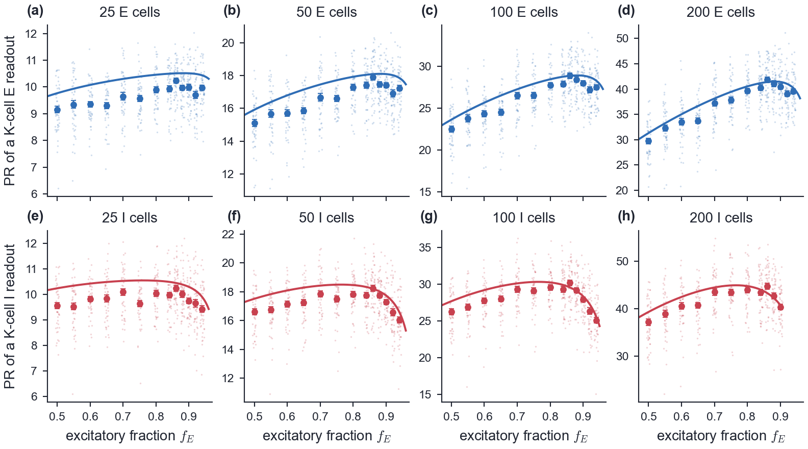
composition_readout_curves.pdf Dimension of a fixed-size readout against excitatory fraction. Top: K excitatory cells; bottom: K inhibitory cells. Lines give the ratio-of-moments prediction R_K (experiments/readout_theory); markers are means over 48 networks of the mean PR of eight readouts. An I readout of size K exists only where the network has at least K inhibitory cells. N = 2,000, Bernoulli edges, 48 seed-matched networks per fraction, 8,000 recorded leak times.
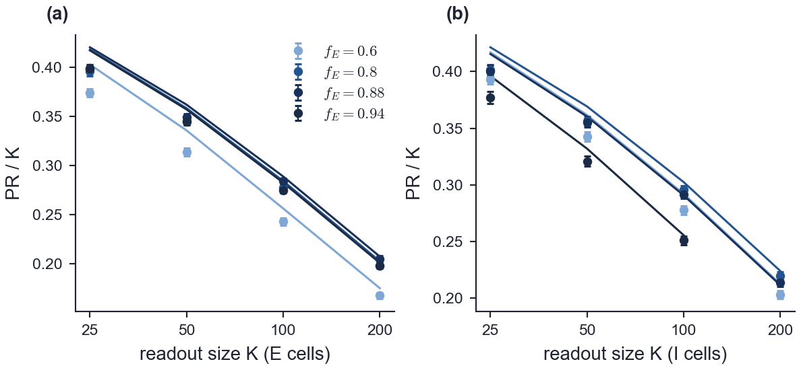
composition_readout_size.pdf Readout dimension per readout cell against readout size, for E (a) and I (b) readouts at four excitatory fractions. Lines are the ratio-of-moments prediction. N = 2,000, Bernoulli edges, 48 seed-matched networks per fraction, 8,000 recorded leak times.
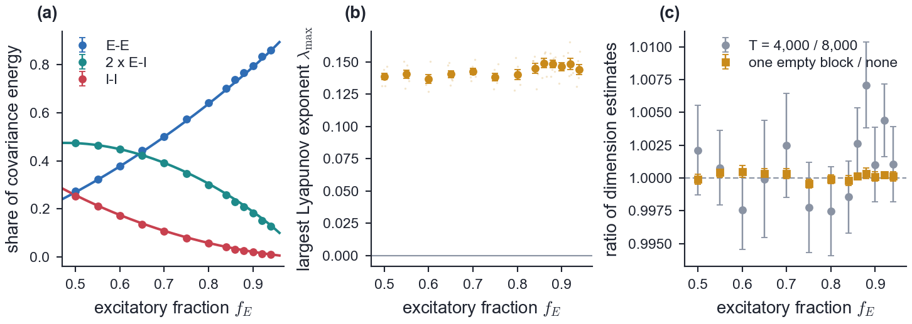
composition_shares_and_dynamics.pdf (a) Allocation of covariance energy to E-E, E-I (counted twice) and I-I blocks with predictions. (b) Largest finite-time Lyapunov exponent, six networks per fraction. (c) Sensitivity of the dimension estimate to recording length and to an empty window between estimator windows. N = 2,000, Bernoulli edges, 48 seed-matched networks per fraction, 8,000 recorded leak times.
Local laws and temporal structure
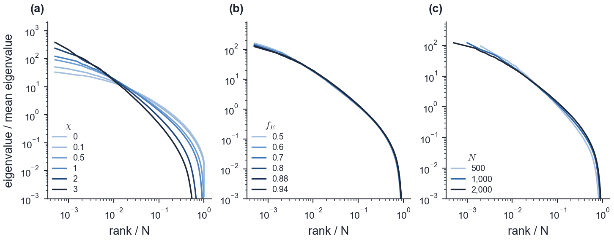
covariance_spectra.pdf Eigenvalue spectra of the whole-record rate covariance (ordinary centering, 8,000 leak times), normalized to unit mean and plotted against normalized rank; geometric mean over up to eight networks. (a) Degree dispersion at N = 2,000. (b) Excitatory fraction at N = 2,000. (c) Network size at dispersion 1, 80:20. These spectra include the finite-record noise floor and are shown for shape only; the manuscript's dimension estimates use the cross-window estimator.
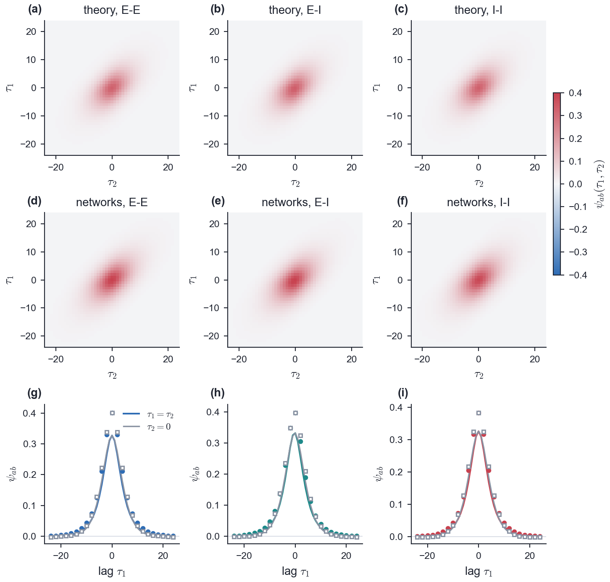
lag_maps_chi0.pdf Two-lag pair moments at \chi=0, N = 2,000 (8 networks). psi_ab(tau1,tau2) is N times the mean over distinct pairs (i in a, j in b) of C_ij(tau1) C_ij(tau2). Top: parameter-only prediction. Middle: mean of cross-fitted network estimates, in which the two covariance factors come from disjoint halves of the recording so that estimation noise does not multiply itself. Each column shares one symmetric color scale; dashed contours mark negative values. Bottom: equal-lag slice (colored) and tau2 = 0 slice (gray) with one across-network standard error. No amplitude or timescale is fitted.
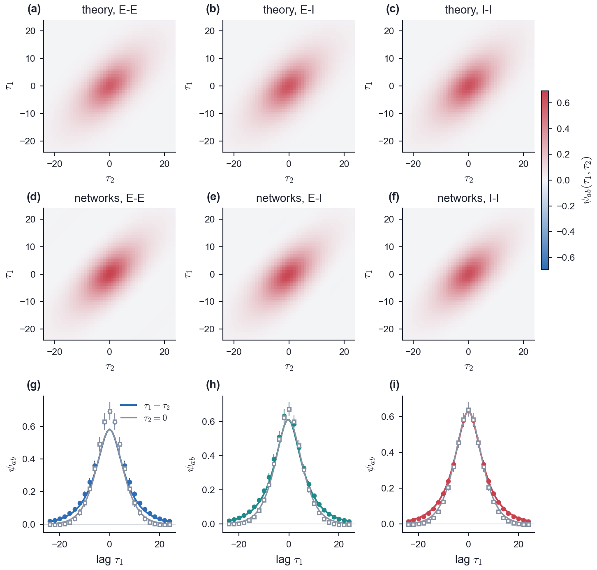
lag_maps_chi1.pdf Two-lag pair moments at \chi=1, N = 2,000 (8 networks). psi_ab(tau1,tau2) is N times the mean over distinct pairs (i in a, j in b) of C_ij(tau1) C_ij(tau2). Top: parameter-only prediction. Middle: mean of cross-fitted network estimates, in which the two covariance factors come from disjoint halves of the recording so that estimation noise does not multiply itself. Each column shares one symmetric color scale; dashed contours mark negative values. Bottom: equal-lag slice (colored) and tau2 = 0 slice (gray) with one across-network standard error. No amplitude or timescale is fitted.
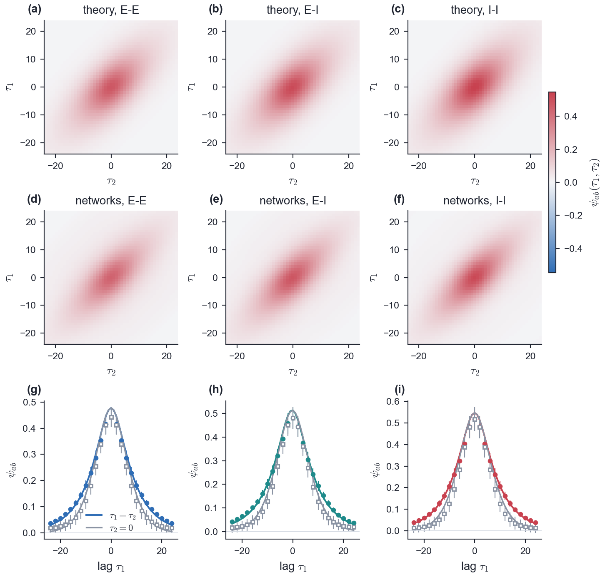
lag_maps_chi2.pdf Two-lag pair moments at \chi=2, N = 2,000 (8 networks). psi_ab(tau1,tau2) is N times the mean over distinct pairs (i in a, j in b) of C_ij(tau1) C_ij(tau2). Top: parameter-only prediction. Middle: mean of cross-fitted network estimates, in which the two covariance factors come from disjoint halves of the recording so that estimation noise does not multiply itself. Each column shares one symmetric color scale; dashed contours mark negative values. Bottom: equal-lag slice (colored) and tau2 = 0 slice (gray) with one across-network standard error. No amplitude or timescale is fitted.
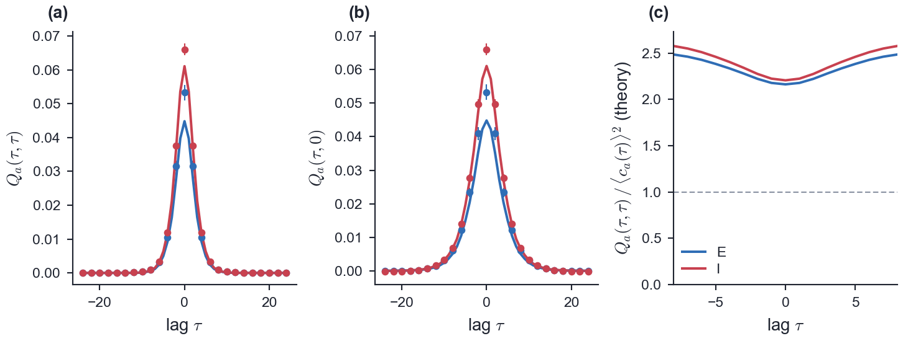
lag_sources.pdf The same-neuron source of covariance energy at Bernoulli dispersion, N = 2,000. Q_a(tau1,tau2) is the mean over neurons of the product of a neuron's own rate autocovariance at two lags, cross-fitted across recording halves. (a) Equal-lag slice and (b) tau2 = 0 slice, with predictions. (c) Predicted ratio of the source to the squared population-mean kernel; averaging spectra before taking the product replaces this ratio by one.
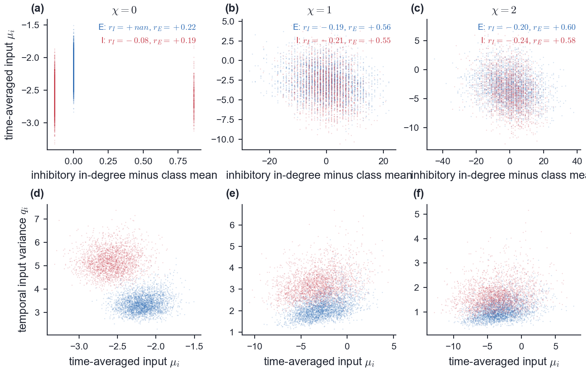
local_degree_and_inputs.pdf Where the operating points come from. Top: each neuron's time-averaged input against its realized inhibitory in-degree (r_I and r_E are the correlations of mean input with inhibitory and excitatory in-degree). With fixed in-degree the remaining spread comes from sampling unequal presynaptic rates. Bottom: each neuron's temporal input variance against its mean input; the closure assigns one temporal variance per population. Six networks pooled per dispersion, 3,000 neurons shown per population, N = 2,000.
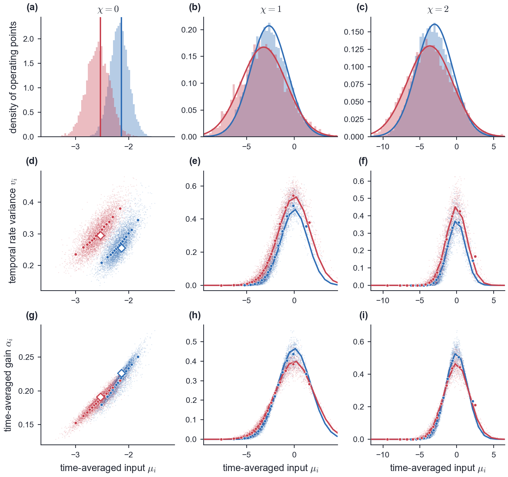
local_laws.pdf The same operating point controls a neuron's rate variance and gain. Columns: degree dispersion 0, 1 and 2 at N = 2,000 (12 networks pooled; E blue, I red). Top: distribution of time-averaged inputs with the predicted Gaussian (a vertical line at zero dispersion, where the leading theory has no static spread). Middle: each neuron's temporal rate variance against its mean input (dots, 5,000 neurons per population), binned means (circles) and the conditional prediction v_a(z) (line). Bottom: the same for the time-averaged gain and alpha_a(z). At zero dispersion the diamond marks the single predicted point.
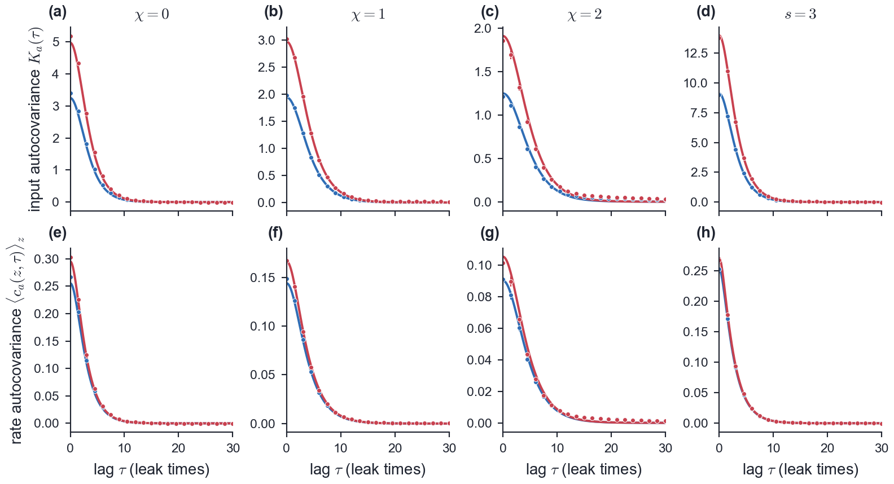
temporal_kernels.pdf Single-neuron temporal kernels against the one-site prediction. Top: autocovariance of the input (population-shared dynamic kernel K_a). Bottom: autocovariance of the rate, averaged over operating points. Lines are parameter-only; markers are means over networks (192 sampled neurons per population per network, whole-record centering) with one across-network standard error. Columns: degree dispersion 0, 1, 2 at the reference coupling, and coupling variance scaled by 3. N = 2,000.
Recording protocol
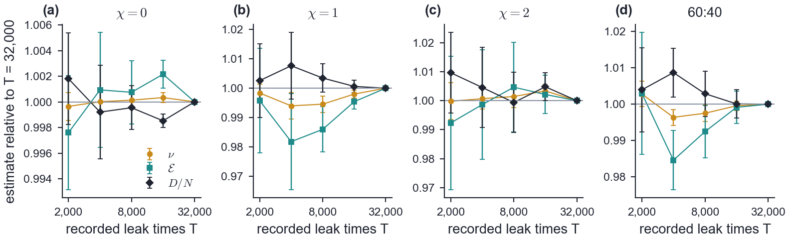
record_convergence.pdf Convergence of the estimators with recording length. Each network's rate variance, covariance energy and dimension from a prefix of its recording, divided by the same network's value at 32,000 leak times (window 500, no gap). Eight networks per setting, N = 2,000; bars are one across-network standard error.
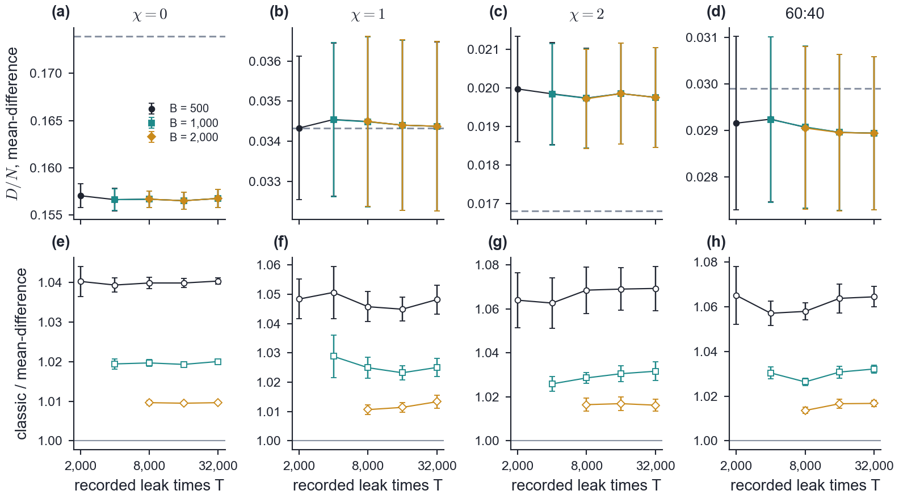
record_duration_and_block.pdf Recording length and window length. Top: the four-window mean-difference estimate of D/N against the recorded duration used, for window lengths B = 500, 1,000 and 2,000 leak times; the dashed line is the prediction. Bottom: ratio of the separately centered estimate to the mean-difference estimate at the same duration and window length; the excess falls as the window lengthens, not as the recording lengthens. Eight networks per setting, N = 2,000; bars are one across-network standard error.
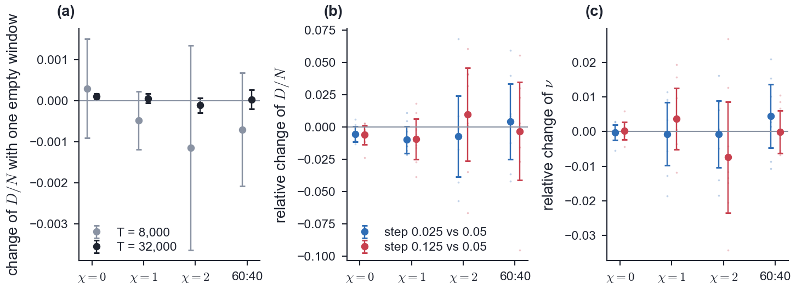
record_gap_and_step.pdf Sensitivity to an empty window between estimator windows and to the integration step. (a) Relative change of D/N when the four estimator windows must be separated by one empty window. (b,c) Relative change of D/N and of the mean rate variance when the same graph and initial condition are integrated with a step of 0.025 or 0.125 instead of 0.05 (8,000 leak times each); a different step produces a different chaotic trajectory, so individual networks scatter. Bars are two-sided 95% t intervals over eight networks; dots are networks.
Other couplings and rates
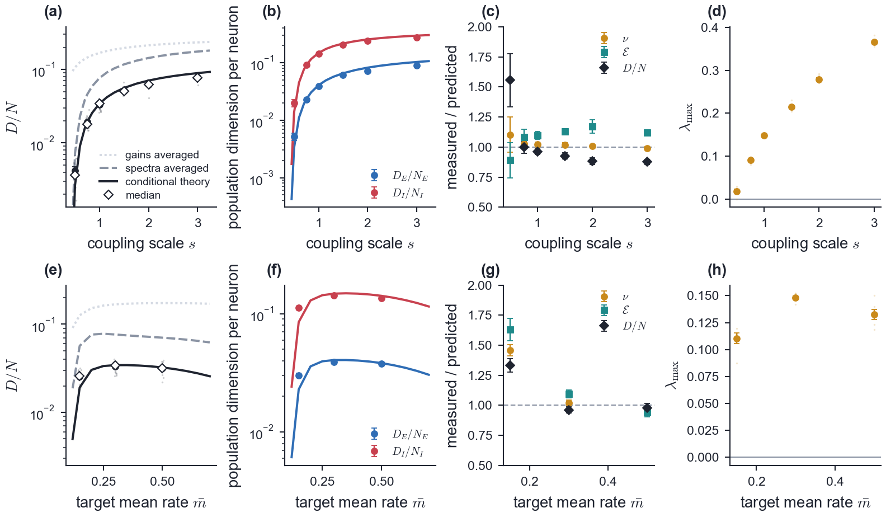
generality_coupling_and_rate.pdf The conditional prediction away from the reference parameters. Top: coupling variance profile scaled by s at fixed mean connectivity and target rate 0.3. Bottom: target mean rate changed at the reference coupling. Columns: joint dimension with the two premature-averaging approximations (hollow diamonds are medians); population dimensions; measured-to-predicted ratios of rate variance, covariance energy and dimension; largest finite-time Lyapunov exponent (six networks). At s = 0.5, close to the transition to chaos, D/N scatters widely around a small prediction and its ratio lies partly off scale. N = 2,000, 80:20, Bernoulli-like dispersion 1, 16 networks per setting (24 at the reference); one s = 0.5 network that settled to a fixed point is excluded.
Fixed-point modes
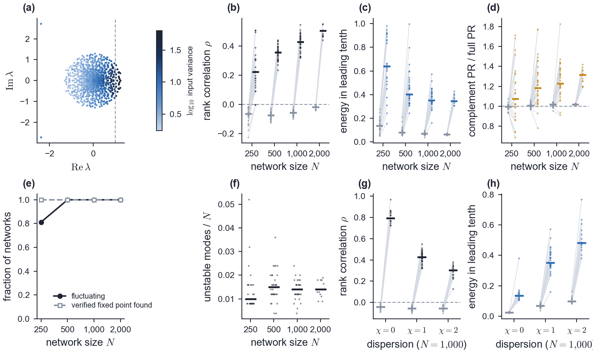
spectral_cohort.pdf Fixed-point modes organize recorded fluctuations across network size and dispersion. (a) Eigenvalues of J diag(phi'(x*)) at the first verified fixed point of one network of 2,000 cells; color is the recorded input variance along each unit right eigenvector, and the dashed line is the instability threshold. (b-d) For each fluctuating Bernoulli network, the observed statistic (colored) beside its shuffle median (gray), joined by a line; horizontal bars are medians across networks. (b) Spearman correlation rho between a mode's real eigenvalue and its input variance, against within-population coordinate shuffles. (c) Fraction of squared rate-covariance energy inside the leading tenth of fixed-point directions, against gain-decile-matched shuffles. (d) PR of the recording after projecting out that subspace, relative to the full PR. (e) Fraction of networks that fluctuate and fraction with a verified fixed point. (f) Number of unstable fixed-point modes per neuron. (g,h) The comparisons of (b,c) at N = 1,000 for degree dispersion 0, 1 and 2. Networks: 32 at 250, 32 at 500, 32 at 1,000, 13 at 2,000 cells (Bernoulli); 16 each at dispersion 0 and 2.
Controls and bookkeeping
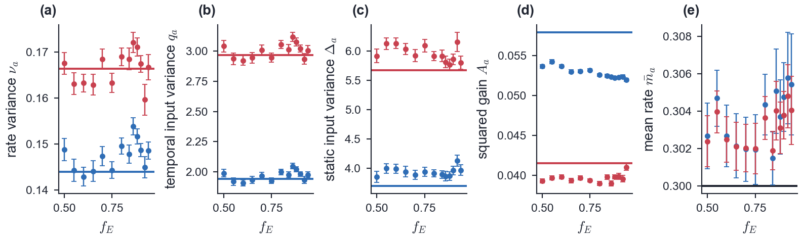
check_composition_local_laws.pdf Along the composition path the one-site statistics should not change. Mean temporal rate variance, temporal input variance, static input variance, squared gain and mean rate of each population (E blue, I red) against excitatory fraction, with the single fraction-independent prediction as a horizontal line. N = 2,000, 48 networks per fraction; bars are one across-network standard error.
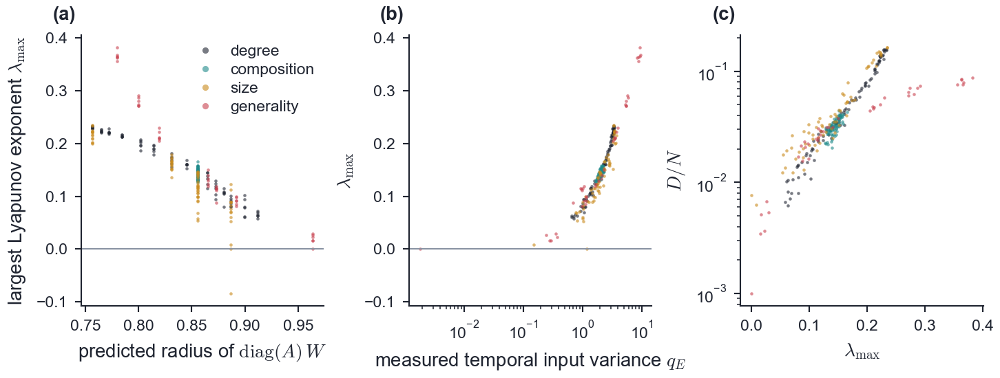
check_lyapunov_all.pdf Largest finite-time Lyapunov exponent of all 280 networks where it was measured (one tangent vector, 2,000 leak times after burn-in), against (a) the predicted spectral radius of the population response matrix and (b) the measured temporal input variance of E cells; (c) dimension against the exponent. Colors mark the experiment family. One network at a fixed point has a negative exponent and three are zero within their block-to-block scatter (summary.json lists them); the rest are positive in every time block.
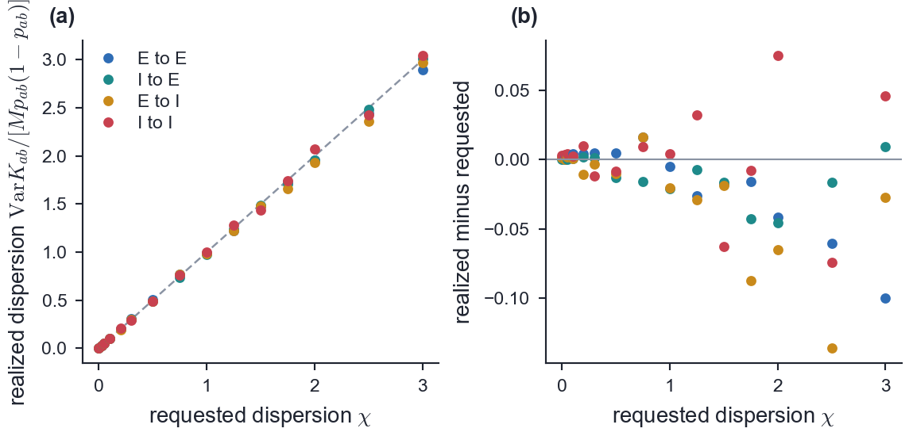
check_realized_degree_dispersion.pdf The degree sampler delivers the requested dispersion. (a) Variance of the realized in-degree in each of the four connectivity blocks, divided by the Bernoulli count variance, against the requested dispersion (mean over six networks; the dashed line is equality). (b) The difference, which at zero dispersion is the stochastic rounding of non-integer mean counts. N = 2,000.
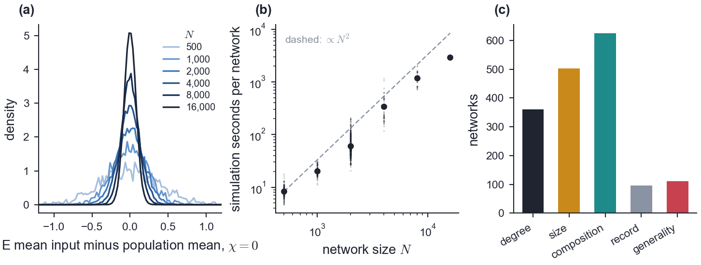
check_spread_and_timing.pdf (a) Distribution of excitatory mean inputs at fixed in-degree, centered on the population mean, for each network size (four networks pooled per size); the leading theory predicts a point mass. (b) Simulation time per network on one core of the rented machines (8,000 leak times, step 0.05), with a quadratic guide. (c) Networks per experiment family.